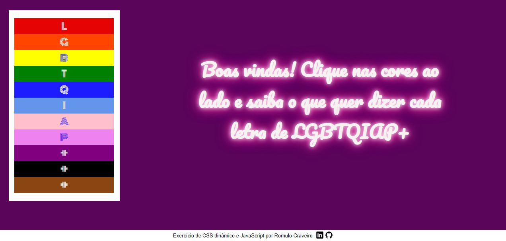

Contact information
Phone: + 55 (71) 99221 0760
E-mail: romulocraveiro@gmail.com
Main skills
- HTML
- CSS
- JavaScript
- Node JS
- SQL
- React JS
- Figma
- WAVE (Web Accessibility Evaluation)
Languages
- English: advanced
- Italian: intermediate
- Spanish: pre-Intermediate
- French: basic
- German: basic
- Russian: basic
My favorite projects
Click on the images to access the projects:

Dinamic HTML and CSS, and JavaScript


Short-term courses
- Bootcamp HTML Developer - Digital Innovation One;üîó
- Algorithms and Programming - Basic Module with Geneflides Laureno - Instituto Conhecimento Liberta - Python language fundamentals;üîó
- Backend with NodeJs and Express Part 1 - Samsung Ocean;üîó
- Backend with NodeJs and Express Part 2 - Samsung Ocean;üîó
- For a complete list of certifications, please checkout my Linkedin section by clicking here.üîó


Romulo Craveiro
Full-stack developer
Professional Objective
To work with software development making a difference in human development, and in the day-to-day tasks of professionals, companies, and clients.
Summary
Going through a career shift from teaching foreign languages, I wish to bring to my new profession creativity, a humanized eye, planning, anticipation of problems, and constant reflection on what can be better in my tasks.
Education
SOFTWARE DEVELOPMENT COURSE
CUBOS ACADEMY | NOVEMBER 2021 - JUNE 2022- Back-end - programming logic, Node.js, and PostgreSQL;
- Front-end: HTML, CSS, JavaScript, React JS;
- Soft skills - time management, non-violent communication, agile methodologies Trello and Jira Atlassain, negotiating, advanced English, non-violent communicaiton
- Development of web applications, back-end and front-end integration, code versioning.
ALGORITHMS AND PROGRAMMING
INSTITUTO CONHECIMENTO LIBERTA | FEBRUARY 2021 - JUNE 2021MASTERSHIP OF LETTERS
UNIVERSIDADE FEDERAL DA BAHIA | MARCH 2009 - NOVEMBER 2011.ENGLISH LANGUAGE SPECIALIZATION COURSE
UNIVERSIDADE SALVADOR | APRIL 2008 - DECEMBER 2009.TEACHING DEGREE IN LETTERS - PORTUGUESE AND ENGLISH
UNIVERSIDADE SALVADOR – UNIFACS | MARCH 2003 - DECEMBER 2007.SIT TESOL CERTIFICATE COURSE
WORLD LEARNING SIT GRADUATE INSTITUTE – COLIGAÇÃO DAS ENTIDADES DE EDUCAÇÃO E CULTURA BRASIL ESTADOS UNIDOS | JULY 2012.ASTROLOGY FORMATION COURSE
GAIA ESCOLA DE ASTROLOGIA | JANUARY 2015- NOVEMBER 2019.Experience
FREELANCE WEB DEVELOPER
COL√âGIO DE PSICAN√ÅLISE DA BAHIA | JULY-AUGUST 2017 | SALVADOR-BA- Wix website development. Some features I added to the institution's website: üîó
- A photo galery and embedded video; üîó
- Google Maps in the "Contact" page; üîó
- An embedded ‚Äúissuu‚Äù e-reader to make it possible to read articles with page-turning and a sound effect; üîó
- The training of personnel to empower them to update and maintain the website.
WEB DEVELOPMENT STUDENT
CUBOS ACADEMY | JUNE 2022 | SALVADOR-BA- Projeto multidisciplinar de final de curso da Cubos Academy üîó
It was the culmination of the course and a great opportunity to create from ground zero a web application as a team
Other professional experiences
ENGLISH AS AN ADDITIONAL LANGUAGE TEACHER
ACBEU | SINCE APRIL 2009 | SALVADOR-BA- Training fellow teachers in the use of technology for online classes;
- Coaching student teachers;
- Teaching with technology;
- Partnership with students' families;
- Teaching Portuguese as an additional language
TRANSLATOR
ASTRO.COM | SINCE APRIL 2009 | SALVADOR-BA- Translation of Dana Gehardt's articles
ASTROLOGER
SELF-EMPLOYED | SINCE 2017 | SALVADOR-BA- Self-knowledge
- Forecasting
PERCUSSIONIST
MARACATU SANTO ANTÔNIO | FEBRUARY 2014 - NOVEMBER 2017 | SALVADOR-BA- Instruments: alfaia, gonguê, snare
- Performances in fairs and Carnaval